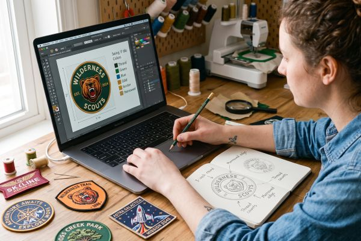

How to Design Custom Patches: The Complete Beginner's Guide
Designing a custom patch is part art, part engineering. The good news is you don't need to be a professional designer to get a great result — you just need to understand how patch production works. In this beginner's guide, we walk through the whole process: choosing the right patch type, sizing your artwork, picking colors, preparing files, and avoiding the mistakes that cause rework.

What Makes a Great Custom Patch Design?
Before you open any design software, ask what the patch needs to do. A club patch worn on a motorcycle jacket has to be readable from a distance. A fashion brand patch needs to look premium up close. An event patch needs to communicate a theme in one glance.
Three principles apply to nearly every successful patch design:
- Keep it simple. A patch is a small object. Every extra element makes it busier and harder to read.
- Design at actual size. Print your layout at the final patch size before ordering. If text is hard to read on paper, it will be worse in thread.
- Plan for the edge. Whatever sits close to the outer edge gets trimmed by the border, so leave breathing room.
A great patch reads in two seconds. If a viewer can't understand the design from arm's length, simplify it.
Choose the Right Patch Type for Your Design
The patch type decides what your design can and can't do. Match the material to the artwork instead of forcing the artwork to fit the material.
| Patch type | Best for | Watch out |
|---|---|---|
| Embroidered | Bold logos, text, uniforms | Fine detail and gradients are difficult |
| Woven | Small text, fine lines, high detail | Flat look, thinner fabric |
| PVC / Silicone | 3D shapes, outdoor and tactical gear | Needs a mold, small runs cost more |
| Printed (Sublimation) | Photos, gradients, unlimited colors | Flat, smooth surface, no stitching texture |
| Leather | Premium branding, debossed logos | Limited color options |
| Chenille | Varsity letters, soft fuzzy texture | Not suitable for fine detail |
| Metal | Luxury labels, plaques | Small size, weight, limited colors |
Still unsure? Start with embroidered — it is the most popular and versatile choice. If your design contains tiny lettering or photographic elements, read our woven vs embroidered comparison and the printed patches overview before deciding.
Set the Right Size and Shape
Size is a design decision, not an afterthought. It affects legibility, cost, and how the patch sits on the garment.
- Small (1"–2"): good for hat logos and small labels, but detail must be very simple.
- Medium (3"–4"): the sweet spot for chest, sleeve, and shoulder patches.
- Large (5"–10"+): back patches for motorcycle clubs, sports teams, and jackets.
Common shapes are round, oval, shield, and rectangle. If your logo has an unusual outline, a custom die-cut shape gives the most professional result — the patch follows the artwork exactly instead of being forced into a standard shape.
Also consider where the patch will live. A wide design suits a back patch; a tall design suits a sleeve; a compact design works on a hat or chest pocket. Check our size guide for standard dimensions and price tiers.
Follow Embroidery-Friendly Design Rules
If you choose embroidered patches, the design must respect how thread behaves. These rules prevent most first-order disappointments:
- Text: keep letters at least 1/4" (6mm) tall, and prefer bold fonts.
- Thin lines: keep strokes at least 1–1.5mm thick, or they fill in and blur.
- Spacing: leave 2–3mm between separate elements so stitches don't merge.
- Coverage: 100% coverage looks dense and premium; 75% coverage is softer and more affordable.
- Outline: a dark outline around light areas adds definition and prevents color bleeding.
When in doubt, ask the factory for advice before production. A good manufacturer will tell you which elements will or won't work in thread — we do it on every order.
Choose Colors That Translate Well
Colors behave differently in thread, PVC, and ink. Design with the final medium in mind.
- Use Pantone codes. Naming colors ("dark red") invites guesswork; a Pantone reference leaves no ambiguity.
- Embroidery thread comes in a wide but limited palette. Stick to 3–5 main colors for clean, classic results.
- Gradients are hard for embroidery. For smooth gradients or photorealistic artwork, use sublimation printing or PVC instead.
- Contrast matters. Light text on dark fabric, or dark text on light fabric — avoid two similar tones next to each other.
- Ask for a thread color card. Digital screens never show thread colors exactly. Matching from a physical card is the professional way.
Prepare Your Artwork Files Correctly
How you send your artwork determines how fast (and how accurately) your proof comes back.
- Vector files are best: AI, PDF, SVG, EPS, or CDR with text converted to outlines.
- Raster files: at least 300 DPI at the final patch size, saved as PNG with transparent background where possible.
- Convert fonts to outlines so the design doesn't shift on another computer.
- Clean up the file: remove hidden layers, unused elements, and duplicate shapes.
- Add Pantone references for each color if you have them.

No artwork file? No problem. Many first-time buyers only have a rough sketch or a description. Send it anyway — our design team will redraw and digitize it for free, and you'll review a digital proof before anything goes into production.
Choose the Border and Backing
Two finishing decisions complete the design: the border and the backing.
Border styles
- Merrowed border: the classic raised overlock edge, durable and traditional.
- Heat-cut border: clean and flat, great for modern minimal designs.
- Laser-cut border: precise edges, ideal for custom die-cut shapes.
Backing options
- Sew-on: permanent and secure, best for uniforms and heavy use.
- Iron-on: heat-activated adhesive, convenient for clothing.
- Velcro: removable and interchangeable, standard for tactical and workwear.
- 3M adhesive / safety pin: temporary options for events and retail.
Browse all six backing choices on our backing options section to see which fits your application.
Common Design Mistakes to Avoid
After thousands of custom patch orders, these are the mistakes we see most often:
- Tiny text that becomes unreadable when embroidered.
- Too many colors competing for attention.
- Smooth gradients sent for embroidery instead of sublimation or PVC.
- Low-resolution screenshots zoomed up to patch size.
- Design elements touching the edge where the border trims them.
- Fonts that change or break because they weren't converted to outlines.
- Crowded layouts with no clear focal point.
Run your design through this checklist before submitting, and your first proof will usually be nearly perfect.
What Happens After You Submit Your Design?
Here's the standard flow at ChinaPatchFactory:
- Send your design or idea through the quote form or email.
- Receive a free quote and a free digital proof within 12 hours.
- Request changes — revisions are free until you're happy.
- Approve the proof, and production starts (typically 7–10 business days).
- Quality check, then shipping by express or sea to your door.
Ready to Design Your Custom Patches?
Get started with a free quote and digital proof. Our team will help you refine your design for the best possible result.
Get Free QuoteFrequently Asked Questions
What file format should I send for custom patch design?
Vector files (AI, PDF, SVG, EPS, CDR) are best. If you only have raster files, send a 300 DPI PNG or JPG at final size.
Can I design a patch without professional design software?
Yes. A hand sketch, a description, or a simple Canva layout is enough to start. Our designers will clean up and digitize the artwork for free.
How many colors can a custom patch have?
Embroidered patches typically support up to 12–15 thread colors per design. PVC and sublimation printing allow many more colors, including full gradients.
Can I use my existing logo?
Absolutely. Send your logo in vector or high-resolution format. If it's low resolution, our team will redraw it for embroidery.
Is the digital proof really free?
Yes. Every order includes a free digital proof with unlimited revisions before production begins.
Conclusion
Designing custom patches doesn't have to be intimidating. Choose a patch type that fits your artwork, keep the design simple and readable, use the right colors and file formats, and let the factory guide the technical details.
Whether you're branding a business, outfitting a team, or creating merchandise for your brand, ChinaPatchFactory will turn your idea into a polished, durable patch. Contact us today for a free quote and digital proof.